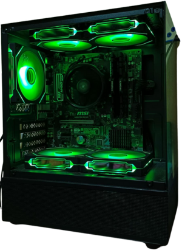

System Unit
A system unit is the main box-like structure of a computer with all the essential components needed for the computer to work. Inside the system unit, you'll find the brain of the computer called the CPU (or central processing unit), the main circuit board (known as the motherboard), and RAM (random access memory).
It's like the “body” of the computer that houses all the important parts that allow it to function and perform tasks. The term is generally used to differentiate between the computer and its accessories (e.g., keyboard, mouse, or monitor).
